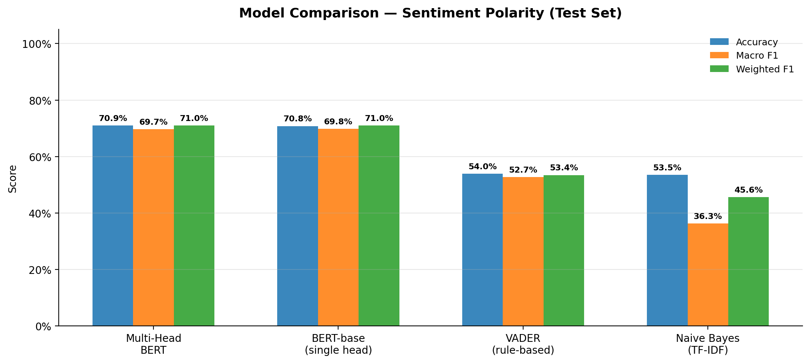
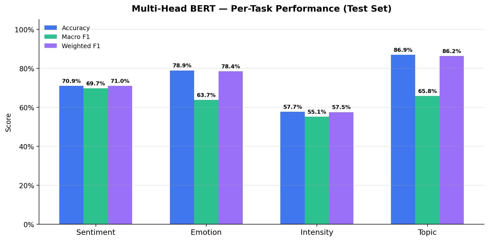
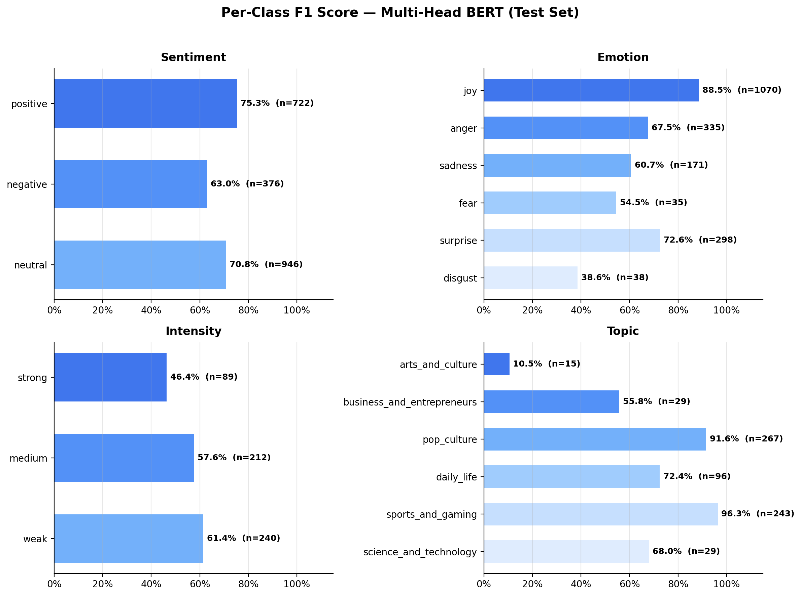
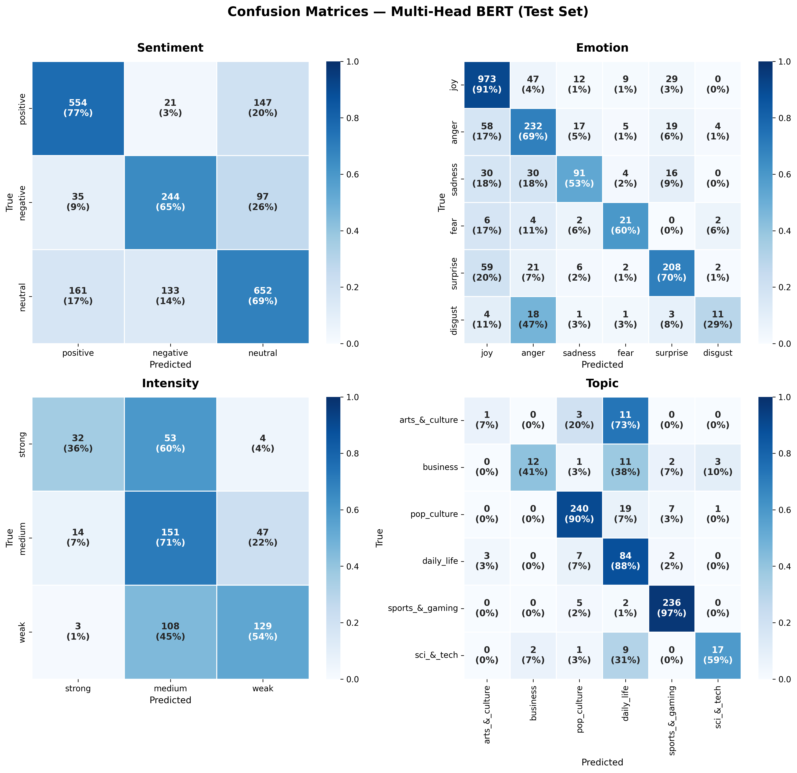

| Model | Accuracy | Macro F1 | Weighted F1 | Samples |
|---|---|---|---|---|
| Multi-Head BERT | 0.7094 | 0.6970 | 0.7095 | 2,044 |
| BERT-base (single head) | 0.7079 | 0.6977 | 0.7104 | 2,044 |
| VADER (rule-based) | 0.5396 | 0.5271 | 0.5345 | 2,044 |
| Naive Bayes (TF-IDF) | 0.5352 | 0.3630 | 0.4560 | 2,044 |

| Task | Accuracy | Precision | Recall | Macro F1 | Weighted F1 | Samples |
|---|---|---|---|---|---|---|
| Sentiment | 0.7094 | 0.6931 | 0.7018 | 0.6970 | 0.7095 | 2,044 |
| Emotion | 0.7889 | 0.6768 | 0.6203 | 0.6373 | 0.7841 | 1,947 |
| Intensity | 0.5767 | 0.6179 | 0.5364 | 0.5515 | 0.5747 | 541 |
| Topic | 0.8689 | 0.7373 | 0.6353 | 0.6578 | 0.8625 | 679 |

| Class | Precision | Recall | F1 | Support |
|---|---|---|---|---|
| positive | 0.7387 | 0.7673 | 0.7527 | 722 |
| negative | 0.6131 | 0.6489 | 0.6305 | 376 |
| neutral | 0.7277 | 0.6892 | 0.7079 | 946 |
| Class | Precision | Recall | F1 | Support |
|---|---|---|---|---|
| joy | 0.8611 | 0.9093 | 0.8845 | 1,070 |
| anger | 0.6591 | 0.6925 | 0.6754 | 335 |
| sadness | 0.7054 | 0.5322 | 0.6067 | 171 |
| fear | 0.5000 | 0.6000 | 0.5455 | 35 |
| surprise | 0.7564 | 0.6980 | 0.7260 | 298 |
| disgust | 0.5789 | 0.2895 | 0.3860 | 38 |
| Class | Precision | Recall | F1 | Support |
|---|---|---|---|---|
| strong | 0.6531 | 0.3596 | 0.4638 | 89 |
| medium | 0.4840 | 0.7123 | 0.5763 | 212 |
| weak | 0.7167 | 0.5375 | 0.6143 | 240 |
| Class | Precision | Recall | F1 | Support |
|---|---|---|---|---|
| arts_and_culture | 0.2500 | 0.0667 | 0.1053 | 15 |
| business_and_entrepreneurs | 0.8571 | 0.4138 | 0.5581 | 29 |
| pop_culture | 0.9339 | 0.8989 | 0.9160 | 267 |
| daily_life | 0.6176 | 0.8750 | 0.7241 | 96 |
| sports_and_gaming | 0.9555 | 0.9712 | 0.9633 | 243 |
| science_and_technology | 0.8095 | 0.5862 | 0.6800 | 29 |

